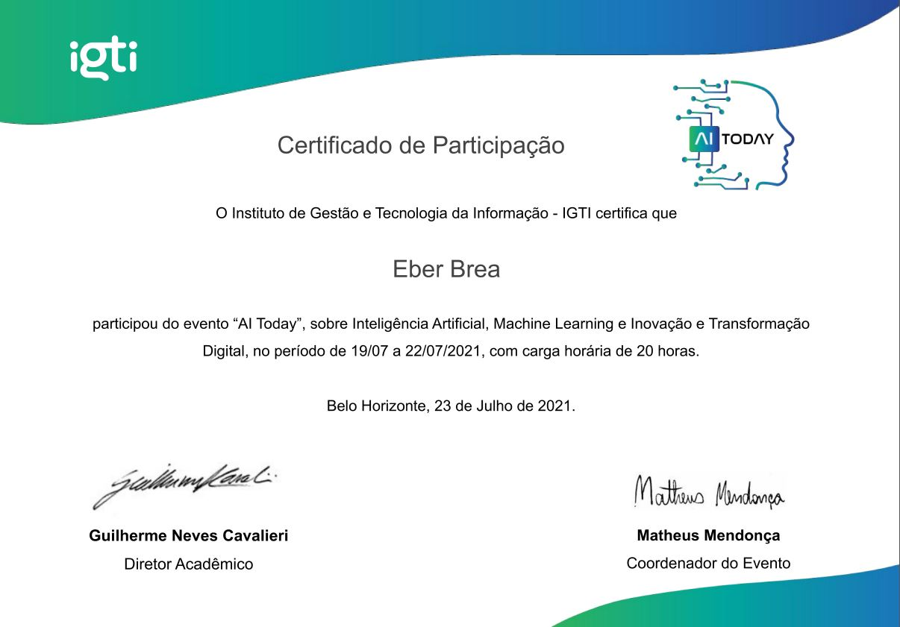

- Ferramentas Microsoft Office: Word, Excel, VBA e Powerpoint; S.O.: Windows e Linux;
- Internet Explorer, Google Suite, Firefox e Brave; Outlook e Lotus Notes;
- Programação DbaseIII Plus, Turbo Pascal, Delphi e Python; PHP, HTML5 e CSS;
- Banco de Dados: Firebird, MySQL e Postgree;
- Aplicativos/IDEs: Xampp, NetBeans, Sublime e Pycharm; EMSManager, IBExpert, IBOConsole e VSC.
Certificados
(Clique no nome para acessar o certificado)
Fundamentos de ETL com Python
Análise de dados com Python e Pandas
Arquitetura de Sistemas Avançado
Fundamentos de Arquitetura de Sistemas
Como realizar consultas de maneira simples no ambiente complexo de Big Data com Hive e Impala
Conceitos e melhores práticas com bancos de dados PostgreSQL
Introdução ao Git e ao GitHub
Introdução ao MongoDB e Bancos de Dados NoSQL
Introdução à programação com Python
Criando pipelines de dados eficientes com Spark e Python
Criando um Ecossistema Hadoop Totalmente Gerenciado com Google Cloud Dataproc
Desenvolvimento para Internet e Banco de Dados com Python e Django
Explorando o poder do NoSQL com Cassandra e HBase
Introdução à Mensageria na Nuvem com Kafka e Python
Introdução a orquestração de contêineres com Docker
Monitoramento de Clusters Hadoop de alto nível com HDFS e YARN
Processando grandes conjuntos de dados de forma paralela e distribuída com Spark
